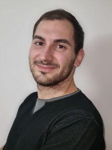
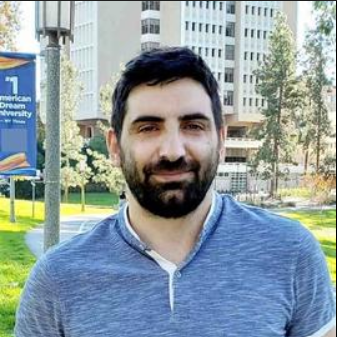
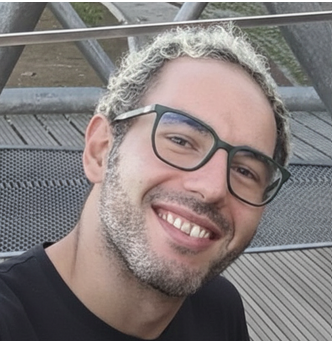

Alessandro Palma
Sapienza University of Rome

Georgios Bouloukakis
University of Patras

Giovanni Farina
Niccolò Cusano University
Technical Program Committee (TPC)
- Andrea Agiollo, TU Delft
- Yackolley Amoussou-Guenou, Université Paris-Panthéon-Assas
- Marco Angelini, Link Campus University
- Enkeleda Bardhi, TU Delft
- Georgios Bouloukakis, University of Patras
- Gianluca Capozzi, KASTEL Security Research Labs, Karlsruhe Institute of Technology
- Antonella Del Pozzo, CEA LIST
- Giorgia Di Pietro, Sapienza University of Rome
- Giovanni Farina, Niccolò Cusano University
- Nikolaos Georgantas, INRIA
- Simone Guarino, Campus Bio-Medico University
- Houssam Hajj Hassan, Orange Research
- Chih-Kai Huang, Télécom Paris, Institut Polytechnique de Paris, France
- Ajay Kattepur, Ericsson Research
- Salvatore Monteleone, Niccolò Cusano University, Italy
- Mabon Ninan, Texas A&M University
- Alessandro Palma, Sapienza University of Rome
- ...